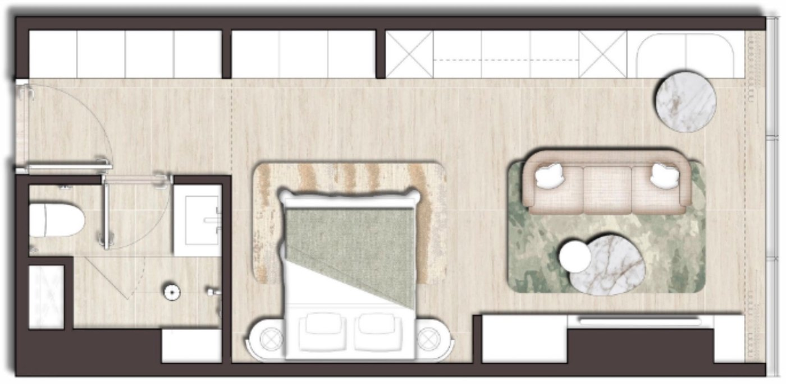
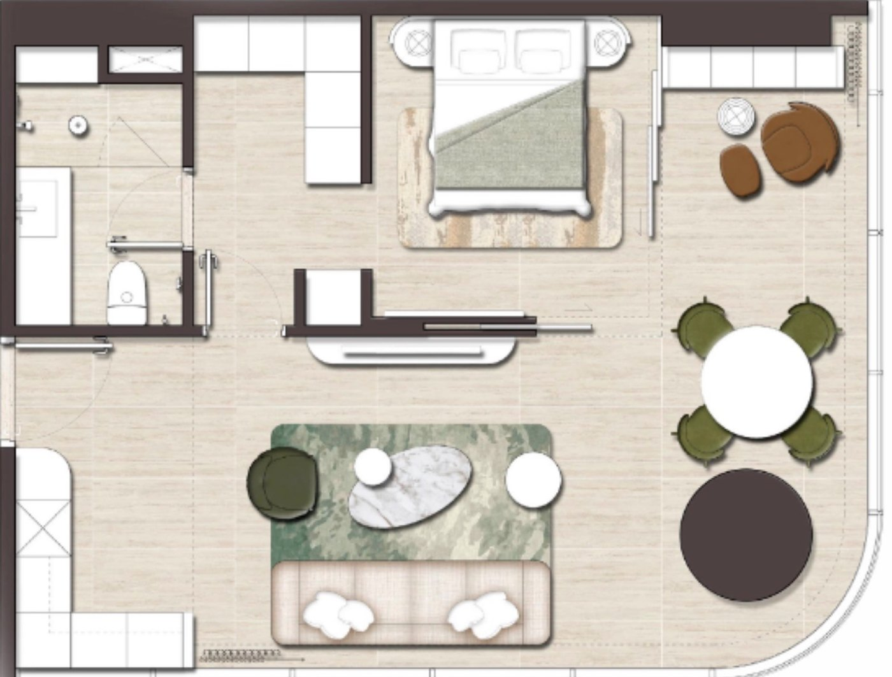
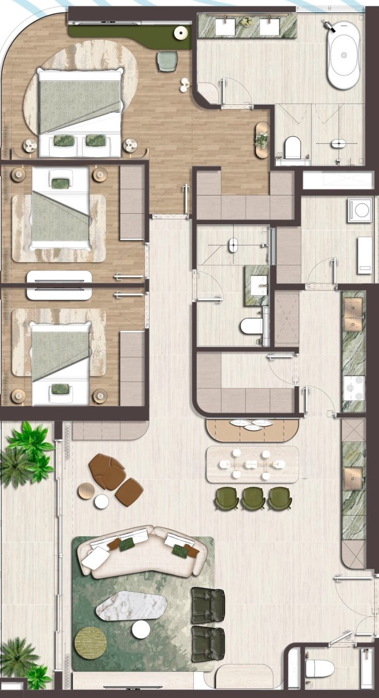

Palm River (Palm City, Thủ Đức): thông tin dự án và mặt bằng căn hộ
1. Tóm tắt nhanh
Palm City
đã thu thập
khác nhau rõ rệt
Palm River là phân khu cao cấp trong khu đô thị Palm City ở Quận 2 cũ (TP. Thủ Đức), do HVH phát triển. Dự án có sản phẩm từ 34,86 m² đến hơn 300 m², đang thi công phần móng và dự kiến ra thị trường trong năm 2026. Phân tích giá riêng xem bài Palm River trên mục Bài viết.
| Hạng mục | Thông tin |
|---|---|
| Tên dự án | Palm River (Palm City) |
| Chủ đầu tư | HVH (theo CBRE quý II/2026) |
| Quy mô | Sản phẩm 34,86 m² đến hơn 300 m²; CBRE liệt kê 600 căn dự kiến mở bán 2026 |
| Tiến độ | Đang thi công móng, cọc khoan nhồi (5/2026) |
| Giá tham khảo | Giá “rumor” 180–220 triệu/m²; giá tham khảo 169–180 triệu/m² |
| Giá bán chính thức | Chưa có bảng giá chính thức trong bài; xem mục 5 |
2. Vị trí
Dự án nằm tại Palm City, Quận 2 cũ, Thủ Đức. Bài chỉ nêu thông tin công bố, không đánh giá vị trí.
3. Sản phẩm
Bảng dưới đây liệt kê toàn bộ mặt bằng đã thu thập; những mẫu có diện tích gần như trùng nhau được ghi chú “cùng mặt bằng”, và phần hình chỉ đặt các mặt bằng khác nhau. Diện tích có thể khác nhau tùy nguồn (tim tường hay thông thủy); cột trống nghĩa là tài liệu không công bố.
| Loại / mã | Số PN | Tim tường (m²) | Thông thủy (m²) | Ghi chú |
|---|---|---|---|---|
| None | 2 | 84,9 | 75,8 | |
| None | 2 | 85,9 | 76,9 | |
| None | 2 | 120,2 | 110,9 | |
| None | 2 | 84,9 | 75,8 | |
| None | 3 | 125,3 | 115,3 | |
| None | 3 | 126,1 | 115,2 | |
| Studio | 0 | 41,3 | 37,3 | |
| 1BR | 1 | 65,9 | 60,2 | |
| 3BR 특수형 | 3 | 157,0 | 144,0 |
Studio

Căn hộ 1 phòng ngủ

Căn hộ 3 phòng ngủ

4. Tiện ích và thiết kế
Thông tin tiện ích chi tiết xem trang chính thức của dự án; bài này tập trung vào mặt bằng căn hộ.
5. Giá tham khảo (gần đúng)
| Nguồn / loại căn | Mức giá | Ghi chú |
|---|---|---|
| Giá “rumor” | 180–220 triệu/m² | Chưa có bảng giá chính thức |
| Giá tham khảo trên batdongsan.com.vn | 168,8–180,2 triệu/m² | Căn 120 m² rao 21,6 tỷ |
| Palm City cùng khu | 99,8–177 triệu/m² | Tham khảo |
Chưa có giá chính thức; mức nhắc đến khoảng 170–220 triệu/m².
6. Tiến độ và nguồn cung
- Chưa có thông tin chính thức trong bài: số căn từng mẫu, bảng giá hiện hành và tiến độ chi tiết; hãy hỏi chủ đầu tư.
7. Kết luận
Bài tổng hợp các mặt bằng đã công bố của Palm River (Palm City) để dễ đối chiếu. Khi cân nhắc một căn cụ thể, hãy xác nhận mã căn, diện tích tim tường và thông thủy và giá hiện hành với chủ đầu tư.